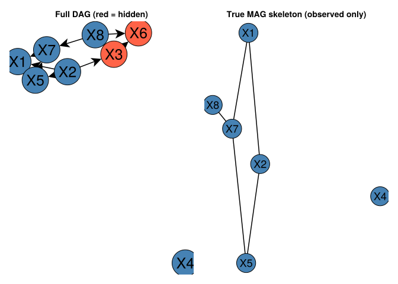
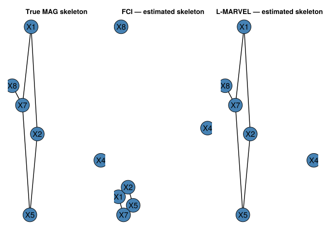

In the previous chapter we assumed all causally relevant variables were observed. This assumption — called causal sufficiency — rarely holds in economics: unobserved ability confounds wage regressions, unobserved demand shocks confound price–quantity relationships, unobserved peer effects confound social network studies.
When latent confounders exist, constraint-based discovery algorithms like PC and RSL-D return incorrect results. This chapter introduces two algorithms that handle the latent variable case.
7.1 Maximal Ancestral Graphs and PAGs
With latent variables, the appropriate representation is a Maximal Ancestral Graph (MAG). Over a set of observed variables \(\mathbf{O}\), a MAG encodes:
\(X \to Y\): \(X\) is an ancestor of \(Y\) in the full DAG
\(X \leftrightarrow Y\): \(X\) and \(Y\) have a common hidden ancestor (hidden confounder)
No edge: \(X \perp\!\!\!\perp Y \mid Z\) for some \(Z \subseteq \mathbf{O} \setminus \{X, Y\}\)
Just as DAGs have Markov equivalence classes represented by CPDAGs, MAGs have equivalence classes represented by Partial Ancestral Graphs (PAGs). In a PAG, the mark \(\circ\) on an edge endpoint means “could be arrowhead or tail in some member of the equivalence class.”
PAG mark
Meaning
\(X \to Y\)
\(X\) causes \(Y\) in every equivalent MAG
\(X \leftarrow\!\!\!\!\circ\; Y\)
Some MAGs have \(X \to Y\), others have \(X \leftarrow Y\)
\(X \leftrightarrow Y\)
Hidden common cause in every equivalent MAG
\(X \;\circ\!\!\!\!-\!\!\!\!\circ\; Y\)
Could be \(\to\), \(\leftarrow\), or \(\leftrightarrow\)
7.2 Simulation with Hidden Variables
We reuse the same 8-node Gaussian linear DAG from the previous chapter and hide 2 nodes, treating them as unobserved confounders.
We can compute the true skeleton over observed variables using oracle d-separation: two observed variables are adjacent in the MAG iff no subset of the observed variables d-separates them in the full DAG.
true_dag =SimpleDiGraph(adj_mat)# True MAG skeleton: edge (i,j) iff no observed subset d-separates obs_idx[i] from obs_idx[j]functiontrue_mag_skeleton(dag, observed) p =length(observed) skel =SimpleGraph(p)for i in1:(p-1), j in (i+1):p u, v = observed[i], observed[j] other_obs =setdiff(observed, [u, v])# Check all subsets of other observed variables separated =any(dsep(dag, u, v, S) for S inpowerset(other_obs))if !separatedadd_edge!(skel, i, j)endendreturn skelendtrue_obs_skel =true_mag_skeleton(true_dag, obs_idx)@printf"True MAG skeleton edges (over %d observed nodes): %d\n" n_obs ne(true_obs_skel)
We can visualize the full DAG with hidden nodes highlighted, alongside the true MAG skeleton:
let node_labels = ["X$i" for i in1:n_vars] obs_labels = ["X$(obs_idx[i])" for i in1:n_obs] node_colors = [i ∈ latent ? :tomato ::steelblue for i in1:n_vars] fig =Figure(size=(850, 380)) ax1 =Axis(fig[1,1]; title="Full DAG (red = hidden)")graphplot!(ax1, true_dag;kwargs_pdag_graphmakie(true_dag; ilabels=node_labels)..., node_color=node_colors)hidedecorations!(ax1); hidespines!(ax1) ax2 =Axis(fig[1,2]; title="True MAG skeleton (observed only)")graphplot!(ax2, true_obs_skel; ilabels=obs_labels, ilabels_fontsize=18, node_color=fill(:steelblue, n_obs))hidedecorations!(ax2); hidespines!(ax2) figend
┌ Warning: Found `resolution` in the theme when creating a `Scene`. The `resolution` keyword for `Scene`s and `Figure`s has been deprecated. Use `Figure(; size = ...` or `Scene(; size = ...)` instead, which better reflects that this is a unitless size and not a pixel resolution. The key could also come from `set_theme!` calls or related theming functions.
└ @ Makie ~/.julia/packages/Makie/UjJJY/src/scenes.jl:238

Figure 7.1: Left: full DAG (red = latent, blue = observed). Right: true MAG skeleton over observed variables — edges include both direct causal paths and confounding via hidden nodes.
7.3 FCI Algorithm
The FCI algorithm (Fast Causal Inference; Spirtes, Meek & Richardson, 1995) is the standard extension of PC to the latent variable case. Like PC, it starts from a complete graph and removes edges via CI tests. After skeleton discovery, it applies a richer set of orientation rules that can produce bidirected edges \(X \leftrightarrow Y\) indicating hidden common causes.
sig_level =0.01# Count CI testscount_fci =Ref(0)ci_fci = (x, y, S, d) ->begin count_fci[] +=1fisher_z(x, y, collect(Int, S), Matrix{Float64}(d), sig_level)endpag_fci =fcialg(n_obs, ci_fci, data_obs)skel_fci =SimpleGraph(pag_fci) # undirected skeleton of the PAGf1_fci =f1_score(true_obs_skel, skel_fci)@printf"FCI: skeleton F1 = %.3f CI tests = %d\n" f1_fci count_fci[]
FCI: skeleton F1 = 0.889 CI tests = 82
println(plot_fci_graph_text(pag_fci, ["X$(obs_idx[i])" for i in1:n_obs]))
X1<-X2 X1<-X7 X2o-oX5 X5o-oX7 nothing
Figure 7.2
7.4 L-MARVEL Algorithm
L-MARVEL (Latent Markov Boundary Variable Elimination; Mokhtarian et al., JMLR 2025) extends the recursive MARVEL approach to handle latent confounders. Instead of the exhaustive conditional independence approach to Markov boundary discovery used by PC/FCI, L-MARVEL uses a Gaussian precision matrix estimator:
where \(\hat P = \hat\Sigma^{-1}\) is the precision matrix and \(\tau\) is a threshold from the Fisher-Z distribution. This is both faster and more stable in the latent variable setting.
The removability criterion changes for the latent case (Theorem 32): variable \(X\) is removable iff for every \(Y \in \text{Mb}(X)\) and \(Z \in \text{Ne}(X)\):
\[\underbrace{\exists\, W \subseteq \text{Mb}(X) \setminus \{Y,Z\}: Y \perp\!\!\!\perp Z \mid W}_{\text{Condition 1}} \quad\text{or}\quad \underbrace{\forall\, W \subseteq \text{Mb}(X) \setminus \{Y,Z\}: Y \not\!\perp\!\!\!\perp Z \mid W \cup \{X\}}_{\text{Condition 2}}\]
L-MARVEL learns only the skeleton (not orientations), but does so correctly even when hidden confounders exist.
count_lm =Ref(0)ci_lm = (x, y, S, d) ->begin count_lm[] +=1fisher_z(x, y, collect(Int, S), Matrix{Float64}(d), sig_level)endlm_skel =l_marvel(data_obs, ci_lm)f1_lm =f1_score(true_obs_skel, lm_skel)@printf"L-MARVEL: skeleton F1 = %.3f CI tests = %d\n" f1_lm count_lm[]
┌ Warning: Found `resolution` in the theme when creating a `Scene`. The `resolution` keyword for `Scene`s and `Figure`s has been deprecated. Use `Figure(; size = ...` or `Scene(; size = ...)` instead, which better reflects that this is a unitless size and not a pixel resolution. The key could also come from `set_theme!` calls or related theming functions.
└ @ Makie ~/.julia/packages/Makie/UjJJY/src/scenes.jl:238

Figure 7.3: Skeleton comparison. True MAG skeleton vs. estimated skeletons from FCI and L-MARVEL.
7.6 Monte Carlo Evaluation
functionevaluate_latent(seed; n_vars=8, n_samples=2000, edge_prob=0.35, n_latent=2, sig=0.01)Random.seed!(seed) adj =gen_er_dag_adj_mat(n_vars, edge_prob) data_full =gen_gaussian_data(adj, n_samples) dag =SimpleDiGraph(adj)# randomly pick which variables are latent (no StatsBase dependency needed) latent_vars =sort(randperm(n_vars)[1:n_latent]) obs_vars =setdiff(1:n_vars, latent_vars) data_obs = data_full[:, obs_vars] n_obs =length(obs_vars) true_skel =true_mag_skeleton(dag, obs_vars)# FCI cnt_fci =Ref(0) ci_fci = (x, y, S, d) ->begin cnt_fci[] +=1fisher_z(x, y, collect(Int, S), Matrix{Float64}(d), sig)end pag =fcialg(n_obs, ci_fci, data_obs) f1f =f1_score(true_skel, SimpleGraph(pag))# L-MARVEL cnt_lm =Ref(0) ci_lm = (x, y, S, d) ->begin cnt_lm[] +=1fisher_z(x, y, collect(Int, S), Matrix{Float64}(d), sig)end skel_lm =l_marvel(data_obs, ci_lm) f1l =f1_score(true_skel, skel_lm) (f1_fci=f1f, f1_lm=f1l, ci_fci=cnt_fci[], ci_lm=cnt_lm[])endmc = [evaluate_latent(s) for s in1:100]@printf"\nMonte Carlo averages (100 replications, n=%d, p=%d, %d latent)\n" n_samples n_vars 2@printf"%-10s Skeleton F1 CI tests\n""Method"@printf"%-10s %10.3f %8.1f\n""FCI"mean(r.f1_fci for r in mc) mean(r.ci_fci for r in mc)@printf"%-10s %10.3f %8.1f\n""L-MARVEL"mean(r.f1_lm for r in mc) mean(r.ci_lm for r in mc)
Monte Carlo averages (100 replications, n=2000, p=8, 2 latent)
Method Skeleton F1 CI tests
FCI 0.912 171.8
L-MARVEL 0.934 80.9
let fig =Figure(size=(650, 380)) ax =Axis(fig[1,1]; xlabel ="CI tests", ylabel ="Frequency", title ="CI Test Counts: FCI vs L-MARVEL (100 replications)")hist!(ax, [r.ci_fci for r in mc]; bins=20, color=(:steelblue, 0.65), label="FCI")hist!(ax, [r.ci_lm for r in mc]; bins=20, color=(:tomato, 0.65), label="L-MARVEL")axislegend(ax) figend
┌ Warning: Found `resolution` in the theme when creating a `Scene`. The `resolution` keyword for `Scene`s and `Figure`s has been deprecated. Use `Figure(; size = ...` or `Scene(; size = ...)` instead, which better reflects that this is a unitless size and not a pixel resolution. The key could also come from `set_theme!` calls or related theming functions.
└ @ Makie ~/.julia/packages/Makie/UjJJY/src/scenes.jl:238
Figure 7.4: CI test count distributions across 100 replications. L-MARVEL’s Gaussian MB estimator reduces the number of CI tests needed.
FCI and L-MARVEL address complementary needs. If you need to orient edges (identify which variable causes which), use FCI. If you only need the skeleton and efficiency matters, L-MARVEL’s precision-matrix Markov boundary estimator reduces the CI test burden.
Warning
Sample size requirements
L-MARVEL’s Gaussian MB estimator requires \(n > p + 1\) samples (to invert the precision matrix). With many variables and limited data, this can fail. In that case, fall back to using CI tests for MB estimation by passing a custom mb_estimator argument to l_marvel.
Note
Going further: orientation in the latent case
FCI’s PAG output is rich: it distinguishes definite causes (\(\to\)), definite hidden common causes (\(\leftrightarrow\)), and uncertain cases (\(\circ\)). For policy analysis, the distinction between a direct causal effect and a confounded association is critical. The PAG can be combined with background knowledge (e.g., temporal ordering) to further orient edges.